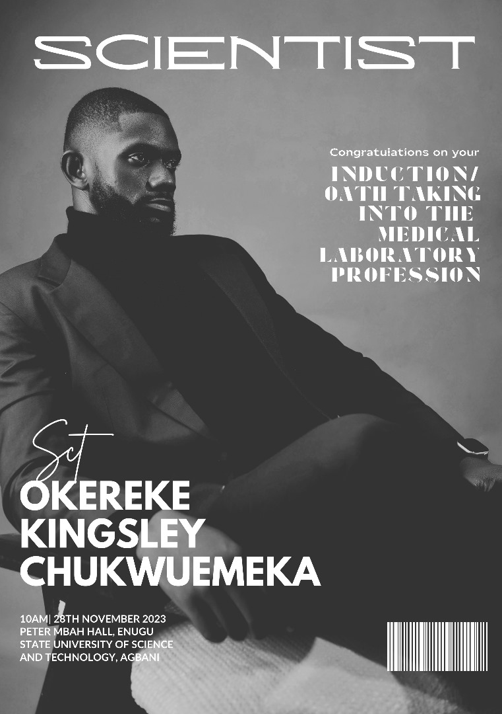

Mastering AI Mechanics
Certified learning completed in October 2026, adding practical AI knowledge to my growing technology toolkit.
The person behind the work
I am a frontend developer and operations-focused professional with a science background, recent frontend internship training, new React and TypeScript skills, and a growing interest in practical AI. I enjoy learning, simplifying problems and turning ideas into work that people can actually use.


My academic journey started with the First School Leaving Certificate, which I obtained in 2012. That early foundation was followed by my training in Medical Laboratory Science, where I developed habits that still influence how I work today: attention to detail, careful observation, documentation and respect for quality.
Over time, my interests expanded into technology. Software development training gave me a practical way to solve problems with code, while professional experience in project supervision and operations taught me how important communication, ownership and follow-through are. I now bring those experiences together in frontend development and digital work.
In 2026, I completed a three-month frontend developer internship training at Techbridge and received certification. I also added React and TypeScript to my toolkit and completed certification in mastering AI mechanics in October 2026. I see these not as endpoints, but as useful steps in a longer learning journey.
I am currently pursuing an MBA, in view from 2026 to date. The goal is to strengthen my understanding of business, management and decision-making so that I can contribute not only as someone who builds technology, but also as someone who understands the wider business problem the technology is meant to solve.
Cross-functional coordination · Workflow optimisation · Remote operations · Client relations · Quality control · Technical research · Documentation · Data handling
Agile / Scrum · Risk awareness · Task allocation · Trello · Asana · Notion · Slack · Google Workspace · Microsoft Office
HTML5 · CSS3 · JavaScript · React.js · TypeScript · Next.js · Tailwind CSS · RESTful APIs · Git / GitHub · LIMS
AI mechanics · Frontend development · Healthcare operations · Clinical standards · Technical documentation · Customer support · Customer retention
Certified learning completed in October 2026, adding practical AI knowledge to my growing technology toolkit.
Three-month internship training completed at Techbridge, with certification and additional hands-on frontend development experience.
First School Leaving Certificate
Foundational education completed in 2012.
Bachelor of Medical Laboratory Science
Enugu State University of Science and Technology. Scientific training that strengthened my analytical thinking, precision and attention to quality.
Software Development
ALX Africa online certification and practical software development training.
MBA — In View
Currently pursuing an MBA to build stronger knowledge of business, management, strategy and decision-making.
Frontend Developer Internship
Three-month internship training at Techbridge, completed with certification.
Mastering AI Mechanics
Certified training completed in October 2026.